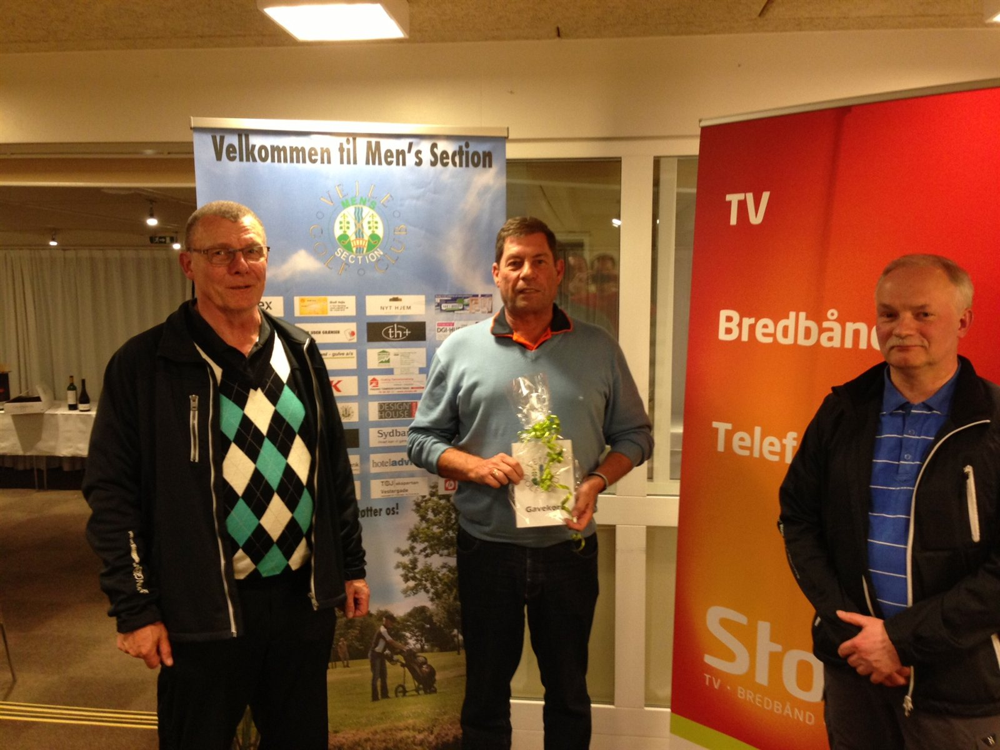
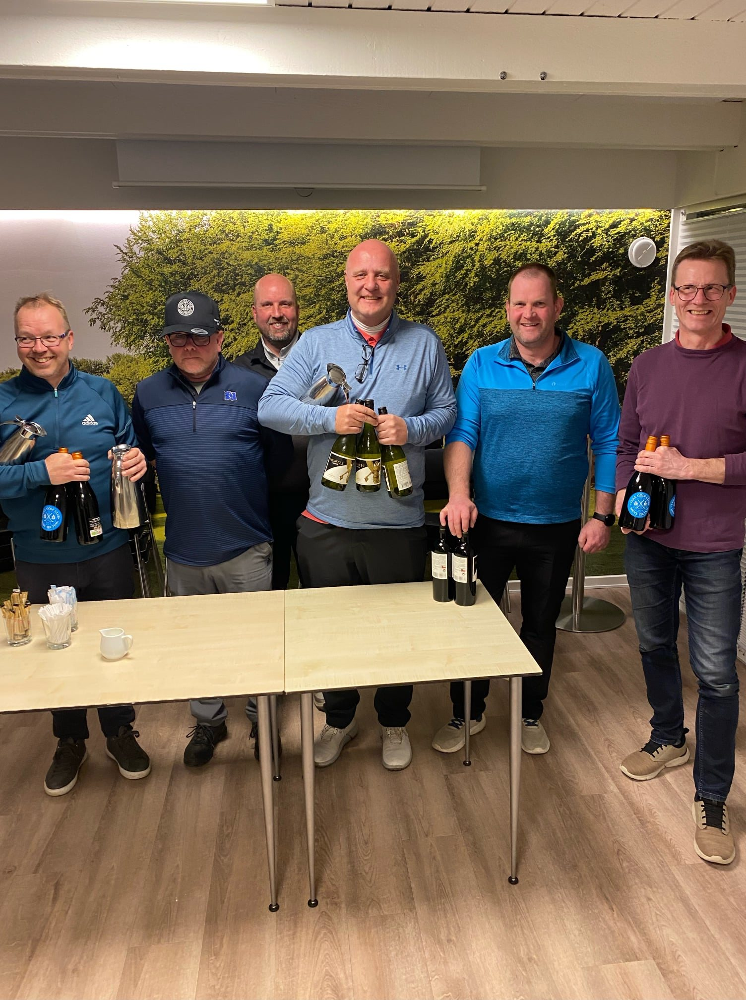
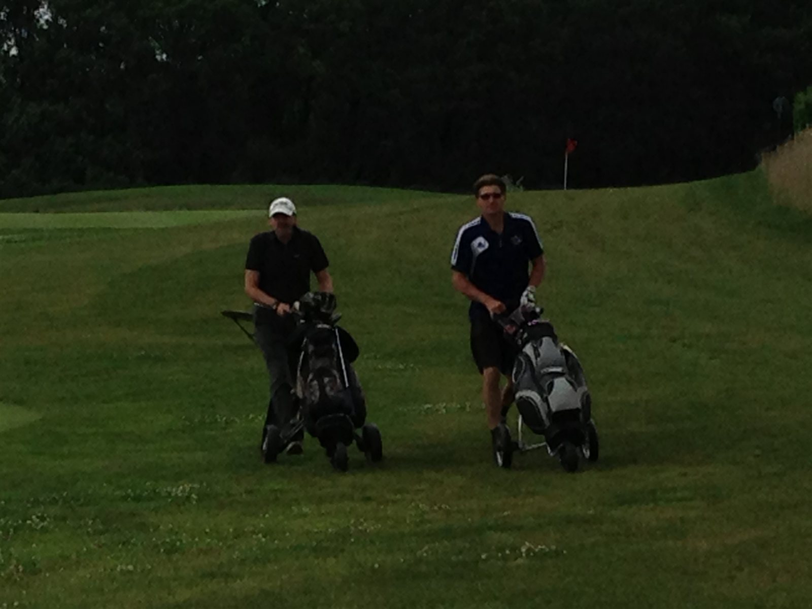

Match Proportioner - 2026

Match Proportioner torsdage i 2025
Matchoversigt.
Tilmelding til Torsdagens match foregår i golfbox senest fredagen før kl. 12.45. Her tilmelder man sig ligeledes til spisning, nærmest flaget og birdie-puljen.
Eftertilmelding er muligt og foregår på golfbox OG så skal man sende en mail til præsidiet, SENEST ONSDAG KL 23.59 med info om mad, nærmest flaget og birdie-puljen. Betaling for dette foregår efter matchen i skranken (nærmest flaget og birdie-puljen) og Den lille Kok ift. maden.
Rækker
Som udgangspunkt spiller vi i 2025 i to rækker med disse HCP:
- A-rækken: HCP. 0 – 14,9
- B-rækken: HCP. 15 – 36+
(regulering af rækker kan forekomme senere da ideen er at have ca. lige mange A og B spillere)
Nærmest flaget
To par 3 huller per match, sponsoreret af MS eller en sponsor.
Et par 4 hul i 2 slag, sponsoreret af MS eller en sponsor.
Captains trøst
Spilleren på næstsidstepladsen ”trøstes” med en træningslektion fra Talal i Proshoppen.
Holdturnering 1 gang om måneden (april til september)
Holdturneringen spilles i tillæg til den normale turnering.
Et hold består af fire spillere og de tre bedste stableford scores på hvert hul tæller. Holdene sammensættes ganske enkelt af de spillere der er tilmeldt hver tee tid. Der spilles 5-6 gange fra april til september og der vil være en præmie til de to bedste hold på dagen. Det er ikke en gennemgående turnering. Er der kun 3 på et hold, bringes Pedro ind som 4. mand.
Præmier

I alle 18 hullers matcher uddeles følgende præmier:
Til de 3 bedste i både A & B rækken samt en overall vinder.
Overall-vinderen kvalificerer sig til “årets match” (spilles sidste torsdag i sæsonen)
Sidani Shoot Out

”Sidani Shoot Out” spilles 10 torsdage i løbet af sæsonen. De 7 bedste scores er tællende.
Captain udvælger et hul til dagens match som fremgår af dagens velkomstskilt. Stableford scoren noteres af præsidiet på de 10 torsdage - Resultaterne kan følges på hjemmesiden. Hullerne vælges ud fra 10 forskellige handicap nøgler og alle sløjfer er medtaget.
Finalen spilles på afslutningsdagen lørdag den 10. oktober 2026.
Finalen spilles som en ”Shoot Out” med de 4 spillere, der har opnået flest point gennem året og som deltager i Mens Section’s afslutningsmatch. Er der flere der har samme antal point på 4. pladsen, spiller alle med i finalen.
Finalen spilles på Parken 9, umiddelbart efter afslutningsmatchen. Der spilles til der er fundet en vinder. I tilfælde af omspil afvikles dette således:
- Første omspil spilles fra Tee 46
- Andet omspil spilles fra Tee 37
- Efterfølgende omspil spilles fra 100 meter mærket.
Der spilles med de ”streger” man har på Parken 9 i forhold til baneforløb Sletten/Parken.
Forhåbentlig vil alle MS’ere være på plads på banen eller på terrassen med en fadøl, for at overvære finalen og samtidig være med til at sætte en god stemning indtil årets vinder er fundet.
Sponsor for turneringen er SIDANI PROSHOP v/ Talal Sidani.